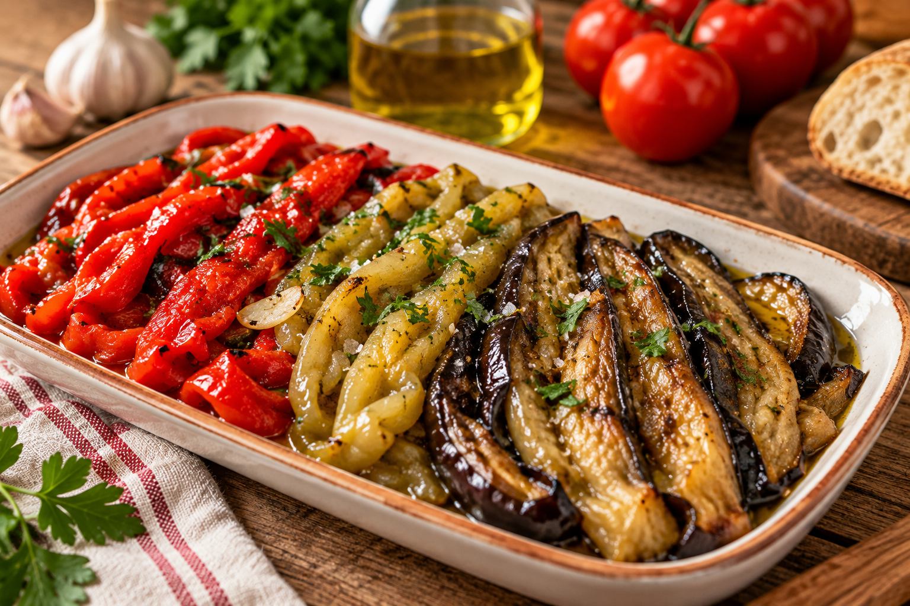
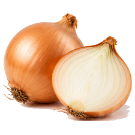
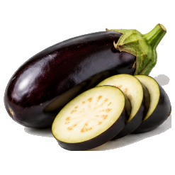
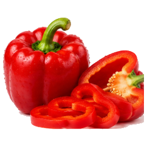
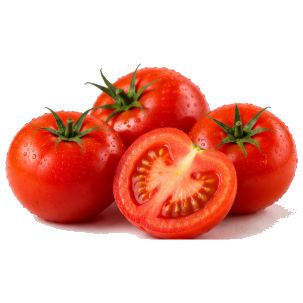
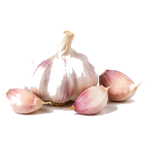

Escalivada

Qué es
La escalivada es uno de los platos más sencillos y populares de la cocina catalana: verduras asadas enteras y servidas en tiras con aceite de oliva. Su nombre viene del verbo catalán escalivar, que significa asar sobre las brasas. Tradicionalmente se hace al fuego de leña, pero en casa queda muy bien en el horno. Se come como entrante, sobre una tostada de pan o acompañando carnes a la brasa.
Ingredientes
Para cuatro personas solo necesitas verduras de huerta y un buen aceite:
- 1 berenjena
- 1 pimiento rojo
- 2 cebollas
- 1 cabeza de ajos
- 3 tomates
- Aceite de oliva virgen extra y sal gruesa
Preparación
La clave de la escalivada es asar las verduras despacio, hasta que estén muy tiernas, y pelarlas cuando ya se han templado.
- Lavar las verduras y pinchar la berenjena para que no reviente en el horno.
- Ponerlas enteras en una bandeja, menos los tomates, y regarlas con aceite.
- Asar en el horno a 170 °C durante una hora.
- Darles la vuelta, añadir los tomates y asar 30 minutos más.
- Dejar templar, pelar las verduras y cortarlas en tiras.
- Servir con un chorro de aceite, sal gruesa y el jugo de la bandeja.
Imágenes ingredientes





Vídeo
Vídeo en catalán: Com fer escalivada al forn, del canal Vicfood.